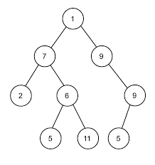
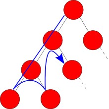
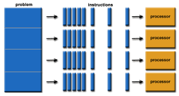

Grado en Ingeniería Informática: Segundo Curso
Volver a Ingeniería Informática

Algoritmos y Estructuras de Datos I
Norberto Marín y Ginés García
Proyecto: Quacker
Problemas de grafos

Algoritmos y Estructuras de Datos II
Norberto Marín y Ginés García
Projectos
Redes de Comunicaciones
Óscar Cánovas
Apuntes de teoría
Proyecto final
Entregas semanales

Programación concurrente y distribuida
José Tomás Palma
Proyecto final